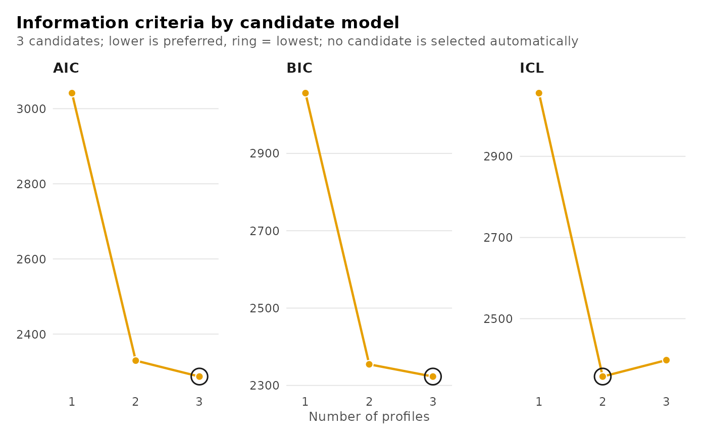
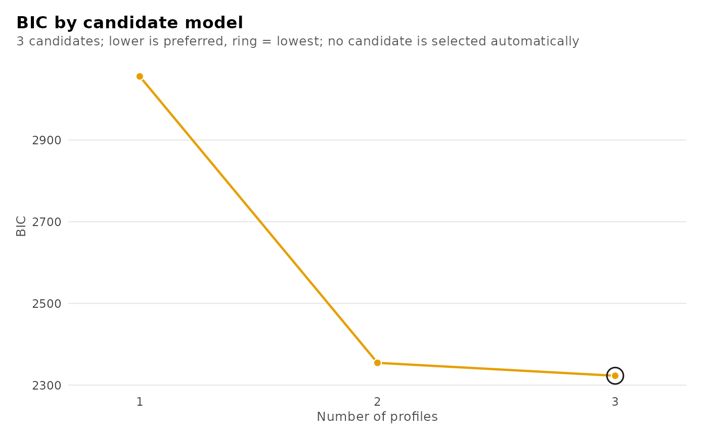
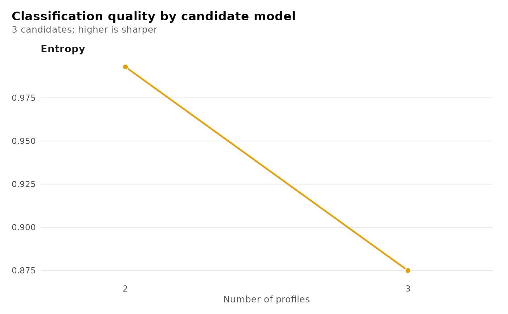

Plot the information criteria of an enumeration grid against the number of classes
Source:R/plot.R
plot_enumeration.Rdplot_enumeration() plots the information criteria of an enumeration grid
against the number of classes: one panel per criterion and one line per
number of group classes (or structure). Lower is preferred; no model is
selected.
Usage
plot_enumeration(
x,
what = c("aic", "bic_groups", "bic_individual", "icl_individual"),
combine = TRUE,
labels = TRUE,
mark_minimum = TRUE,
main = NULL,
subtitle = NULL,
cutoff = 0.8,
using = "bic_groups",
...
)Arguments
- x
An enumeration grid from
enumerate_classes(),enumerate_lpa(),enumerate_lca()orenumerate_regressions().- what
One or more criteria (columns of
as.data.frame(x)), or one or more views; not both in one call. The criteria come first below; of the views, a family grid has only the first three and"tree":criteria of a profile or class grid:
"aic","kic", and"bic","sabic","caic","awe","icl","clc"with the suffix_groupsor_individual(sample size: the groups, or the rows). Default:"aic","bic_groups","bic_individual","icl_individual";criteria of a transition or family grid (
enumerate_classes()withtimeorfamily):"aic","bic","bic_individual", the default;criteria of a regression grid:
"aic","bic","sabic","icl"(the default) and"bic_rows";"all": every criterion of the grid, equal ones drawn once;"entropy": each candidate's relative entropy (plot_entropy());"avepp": its lowest average posterior probability (plot_avepp());"diagnostics":"entropy"and"avepp"together;"deltas": the drop inusingwith each added class (plot_deltas());"heatmap": how farusingis above its lowest (plot_heatmap());"smallest": the smallest class's share, 5% dashed (plot_sizes());"trust": convergence, bounds and replication (plot_trust());"selection": the last four and"diagnostics"(plot_selection());"tree": how classes split (plot_tree()); not with another view.
- combine
TRUE(default) draws the criteria, or"entropy"and"avepp", as panels of one plot;FALSEreturns one plot each, as a list. With"tree"it goes toplot_tree(), whose default isFALSE.- labels
TRUE(default) labels each line directly;FALSEuses a legend instead.- mark_minimum
TRUE(default) circles each criterion's lowest value among the converged candidates;FALSEdraws no circle.- main, subtitle
Title and subtitle of the plot, each one string;
NULL(default) keeps the view's own.- cutoff
The AvePP cutoff drawn dashed by
"avepp","diagnostics"and"selection": one number above 0 and at most 1 (default 0.8).- using
The criterion that
"deltas","heatmap"and"selection"read; by default"bic_groups"on a profile or class grid, else"bic".- ...
With
what = "tree", the other arguments ofplot_tree(). Any other argument raiseslatents_bad_argument.
Value
A ggplot object, or a latents_plots list of them when there are
several (combine = FALSE, several views, "selection", several trees).
Errors: latents_unknown_criterion (what is neither a criterion nor
a view), latents_unsupported_view (a view this kind of grid lacks),
latents_nothing_to_plot (no converged candidate has a finite value),
latents_bad_argument (no grid, criteria mixed with views, a bad value).
See also
plot_criteria() for any grid or comparison; plot_views()
lists what a grid offers; get_candidates() for the table.
Examples
grid <- enumerate_lpa(faithful, c("eruptions", "waiting"),
n_profiles = 1:3, model = "EEI",
n_starts = 2, seed = 1)
plot_enumeration(grid)

plot_enumeration(grid, what = "bic_individual")

plot_enumeration(grid, what = "entropy")
